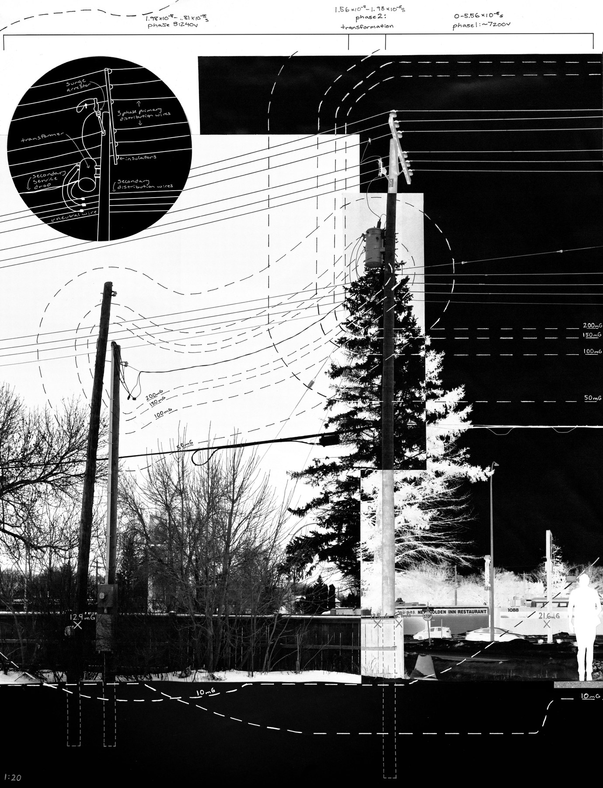
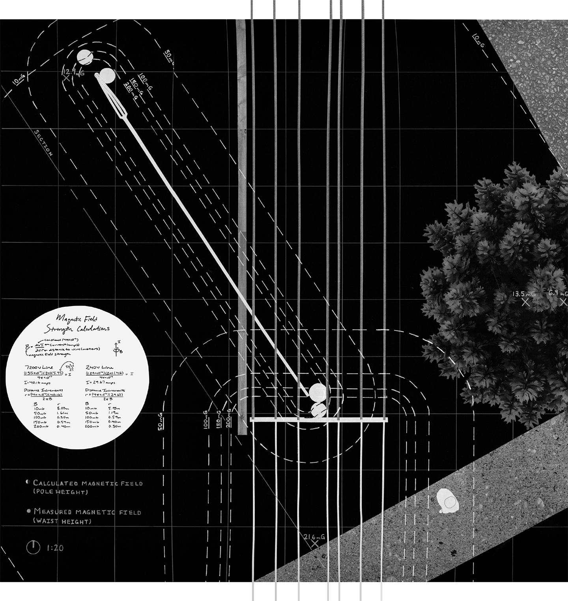
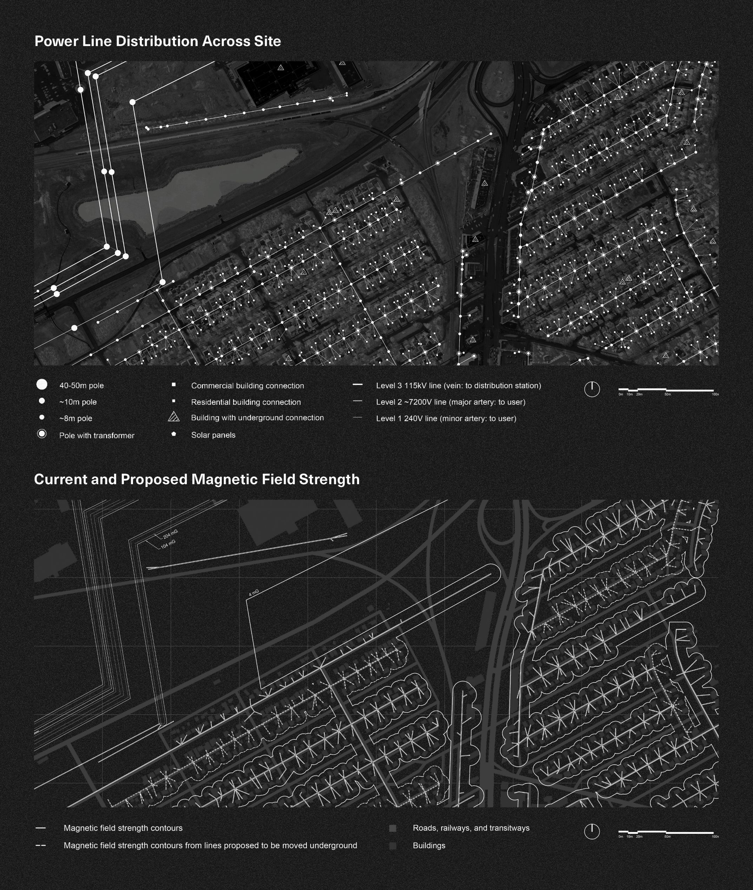
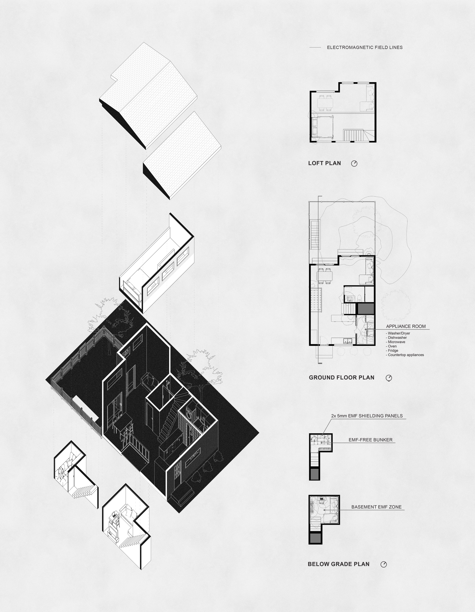
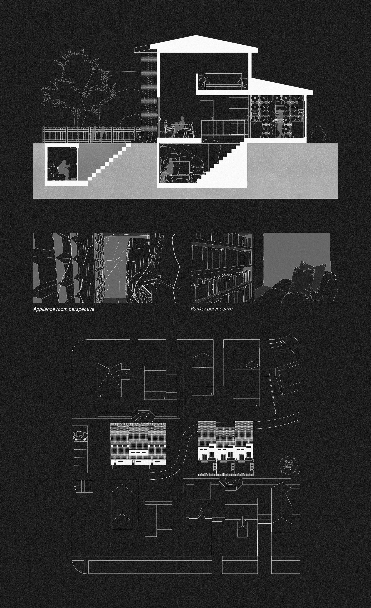

Project brief: Over a term, follow a phenomenon across scales of plot, precinct, and site, culminating in a final design proposal for a dwelling.

The intent of this phase of the project was to record, calculate, and visually represent a 10x10 meter site's shade and exposure to electromagnetic radiation by documenting the magnetic fields produced by components of the city power grid found on the site. The project examines three phases of electrical flow, defined by voltage changes and calculated using the temporal duration of electromagnetic signal velocity.


This neighbourhood-scale inquiry acknowledged the electrosphere as the invisible electromagnetic space sustaining urban life. The first map showed power lines and associated infrastructure across the site. A second map visualized magnetic field strength through contour lines, with intervals based on data collected earlier at the plot scale and new readings from high-voltage lines.

This project is a continuation of previous studies on electromagnetic fields, exploring how these invisible forces could redefine domestic spaces. Faraday House imagines a reality in which potent dangers associated with electromagnetic fields have suddenly been discovered. Through strategic spatial organization and the selective use of EMF-attenuating panels, the design reimagines daily routines by creating zones of varying electromagnetic intensity within a townhouse unit.
